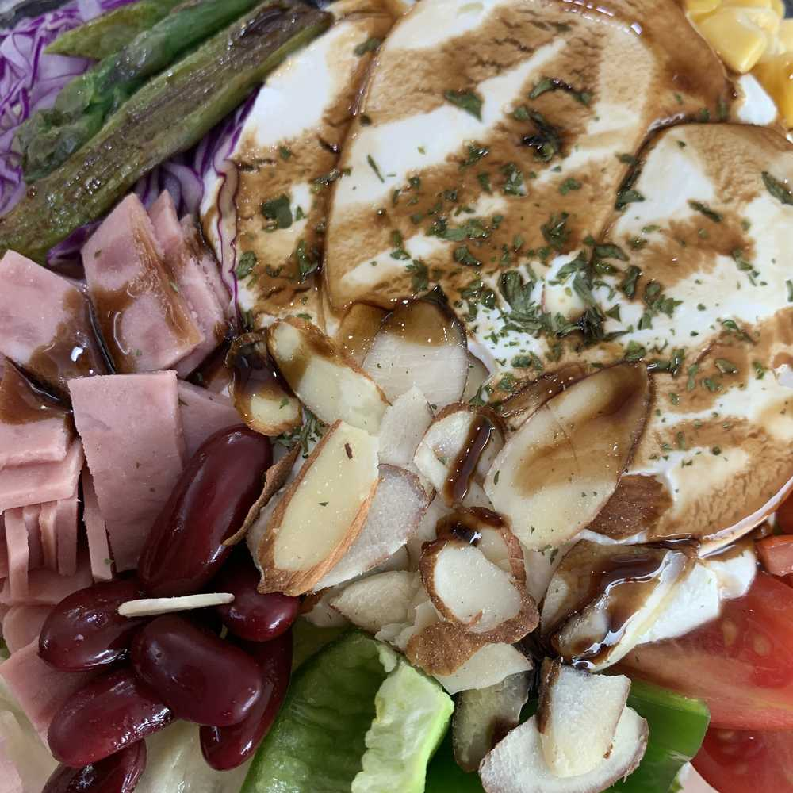

많은 일들이 있었어용
이호한테 물어보고 나서 생각해봤는데
역시 고기를 먹어야겠더라구
그래서 목살 샐러드를 시켰는데 메뉴에서 사라졌다고 하셔서 다시 리코타 치즈 샐러드를 시켰오
치즈는 내가 고기 다음으로 좋아하는 거니까!!
별 기대 없이 먹었는데 생각보다 너무 맛있었다..?
막 올리브랑 콩도 들어가 있고 치즈도 진짜 쫀득쫀쫀하고
(대충 맛있었다는 말)
그래서 든든하게 먹었지용
사실 요즘 아메리카노의 맛을 알아버린 것 같아
원래 라떼 정도는 한 1년에 3번 정도 마시는데
이게 20대의 삶인가
씁쓸한데 달아 좋아
이호는 커피 좋아해?!